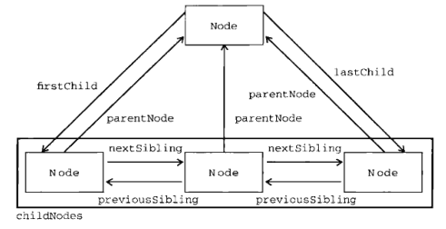

JavaScript高级程序设计-17-DOM
DOM（文档对象模型）是针对HTML和XML文档的一个API，DOM描述了一个层次化的节点树，允许添加、移除、修改页面中的一部分。DOM已经成为表现和操作页面标记的真正跨平台、语言中立的方式。
W3C定义的DOM1规范为基本的文档结构及查询提供了接口，本章主要讨论浏览器中HTML页面相关的DOM1级特性和应用，以及js对DOM1级的实现。
IE中的所有DOM对象都以COM对象的形式实现，所以IE中的DOM对象与原生js对象的行为或特点不一致
节点层次
DOM可以将任何HTML和XML文档描述成一个多层次节点构成的结构，节点分为几种不同的类型，每种类型分别表示文档中不同的信息及标记。每个节点都拥有各自的特点、数据、方法，另外也与其他节点存在关系。节点之间的关系构成了层次，而所有的页面标记则表现为一个以特定节点为根节点的树形结构。1
2
3
4
5
6
7
8
9
10
11
12
<html lang="en">
<head>
<title></title>
<meta charset="UTF-8">
<meta name="viewport" content="width=device-width, initial-scale=1">
<link href="css/style.css" rel="stylesheet">
</head>
<body>
</body>
</html>
文档节点是每个文档的根节点，文档节点只有一个子节点，即<html>元素，称为文档元素,文档元素是文档的最外层元素，文档中的其他所有元素都包含在文档元素中，每个文档只能有一个文档元素，在HTML页面中，文档元素始终是<html>元素。在XML中，没有预定义的元素，因此任何元素都能成为文档元素。
每一段标记都可以通过树中的一个节点来表示：HTML元素通过元素节点表示，特性（attribute）通过特性节点表示，文档类型通过文档类型节点表示，而注释则通过注释节点表示，总共有12种节点类型，这些节点类型都继承自一个基类型。
Node类型
DOM1级定义了一个Node接口，该接口将由DOM中的所有节点类型实现。这个Node接口在js是作为Node类型实现的，除了IE之外，在其他所有浏览器中都可以访问到这个类型。js中的所有节点类型都继承自Node类型，因此所有节点类型都共享相同的基本属性和方法。
每个节点都有一个nodeType属性，用于表明节点的类型，节点类型由在Node类型中定义的12个数值常量来表示，任何节点类型必是其一。nodeType
| NodeType | Named Constant |
|---|---|
| 1 | ELEMENT_NODE |
| 2 | ATTRIBUTE_NODE |
| 3 | TEXT_NODE |
| 4 | CDATA_SECTION_NODE |
| 5 | ENTITY_REFERENCE_NODE |
| 6 | ENTITY_NODE |
| 7 | PROCESSING_INSTRUCTION_NODE |
| 8 | COMMENT_NODE |
| 9 | DOCUMENT_NODE |
| 10 | DOCUMENT_TYPE_NODE |
| 11 | DOCUMENT_FRAGMENT_NODE |
| 12 | NOTATION_NODE |
比较常量，就可以知道节点的类型：1
someNode.nodeType == Node.ELEMENT_NODE; // IE中无法使用Node常量值，只能使用数字 1
nodeName和nodeValue属性
通过nodeName和nodeValue属性可以了解节点的具体信息，每种节点的值都不同。比如，对于元素节点nodeName保存元素的标签名，nodeValue为null。
节点关系
文档中所有的节点之间都存在联系，节点间的各种关系可以用传统的家族关系来描述，相当于把文档树看作家谱。在HTML中，body元素是html元素的子元素，相应的html元素就是body元素的父元素，head元素则是body元素的同胞元素，它们都是html元素的直接子元素。
每个节点都有一个childNodes属性，保存着一个NodeList对象，NodeList是一种类数组对象，用于保存一组有序的节点，可以通过位置来访问这些节点。NodeList对象的特点是它实际上是基于DOM结构动态执行查询的结果，因此DOM结构的变化能够自动反映到NodeList对象中。
NodeList中的节点可以通过方括号，也可以通过item方法访问：1
2
3var firstChild = someNode.childNodes[0];
var secondChild = someNode.childNodes.item(1);
var count = someNode.childNodes.length;
每个节点都有一个parentNode属性，该属性指向文档书中的父节点，包含在childNodes列表中的所有节点都具有相同的父节点。同时相互之间是同胞节点，可以通过previousSibling和nextSibling属性访问。若无前/后同胞节点，则属性值为null。firstChild和lastChild属性也非常方便。ownerDocument属性指向整个文档的文档节点，任何节点都不能同时存在多个文档中，所以可以直接访问文档节点。

同时还有hasChildNodes方法能查询是否有子节点、虽然节点类型都继承自Node，但并不是每种节点都有子节点。
操作节点
因为关系指针都是只读的，所以DOM提供了一些操作节点的方法，比如appenChild方法用于向childNodes列表的末尾添加一个节点，添加节点后，childNodes的所有节点关系指针都会更新，更新完成后，appendChild方法返回新增的节点。
但若appendChild接收的是一个已经存在于文档中的节点则会将该节点从原来的位置转移到新位置。
若要把节点放在childNodes列表中某个特定的位置上，而不是放在末尾，那么可以使用insertBefore方法，该方法接收两个参数，要插入的节点和作为参照的节点，插入节点后，被插入节点会变成参照节点的前一个同胞节点(previousSibling),同时被方法返回。若参照节点是null，则insertBefore和appendChild结果相同。
replaceChild方法能将节点替换为指定节点，接收两个参数：要插入的节点和要替换的节点，方法返回要替换的节点。
移除节点用removeChild方法，该方法接收将要移除的节点。
以上的4个方法都是某节点的方法，所以使用前一定要知道其父节点，若在不支持子节点的节点上调用方法则会报错。同时，被移除和替换的节点理论上仍然归文档所有，但是却没有在文档中占有一个位置。
其他方法
两个公用的方法是节点都有的，cloneNode用于创建调用这个方法的节点的一个副本，接收一个布尔参数表示是否要深度复制，在参数为true的情况下，执行深度复制会包含节点本身及整个子节点树，而浅复制则只复制节点本身。
新的副本节点属于文档，但却没有指定父节点，所以需要使用appendChild、insertBefore、replaceChild等方法将它添加到文档中。
cloneNode方法不会复制添加到DOM节点上的js事件绑定，这个方法只复制特性、子节点（可选）。
第二个公用方法是normailze，该方法的作用是处理文档树中的文本节点，由于解析器的实现或DOM操作等原因吗，可能会出现文本节点不包含文本，或者接连出现多个文本节点，当某个节点上调用此方法时，就会在该节点的后代节点中查找上述特别的情况，若找到空文本节点，则删除它，若找到相邻的文本节点则合并它们。
Document类型
js通过Document类型表示文档，在浏览器中，document对象是HTMLDocument（继承自Document类型）的一个实例，表示整个HTML页面，而且，document对象是window对象的一个属性，因此可以将其作为全局对象来访问。Document节点的特征如下：
- noteType值为9
- nodeName值为”#document”
- nodeValue、parentNode、ownerDocument值为null
- 其子节点可能是一个DocumentType/Element/ProcessingInstruction/Comment
Document类型可以表示HTML页面或其他基于XML的文档，不过最常见的还是作为HTMLDOcument实例的document对象，通过document对象可以取得与页面有关的信息，而且还能操作页面的外观及底层结构。
文档的子节点
有两个内置的访问Document子节点的快捷方式，第一个就是doucmentElement属性，该属性始终指向HTML页面中html元素，另一个就是通过childNodes列表访问文档元素，但前者更快更直接。
比如如下页面1
2
3
4
5<html>
<body>
</body>
</html>
浏览器解析后，其文档中只包含一个子节点，即html元素，可以通过documentElement和childNodes列表来访问这个元素：1
2
3var html = document.documentElement; // 取得对<html>的引用
html === document.childNodes[0]; // true
html === document.firstChild; // true
作为HTMLDocument的实例，document对象还有一个body属性，直接指向body元素。
Document另一个可能的子节点是DocumentType，通过将<!DOCTYPE>标签看作是一个与文档其他部分不同的实体，可以通过doctype属性（document.doctype）获取。浏览器对doctype的支持差别很大，有的浏览器将其当做注释，有的返回null。
同时从技术上说，出现在html元素外的注释应该也算是文档的子节点，但浏览器之间对其也存在差异。
在多数情况下，在document对象上调用appendChild、removeChild、replaceChild方法都是无效的，因为文档类型是只读的，只能有一个元素子节点且早已存在。
文档信息
document对象有一些标准Document类型所没有是属性，比如title属性，即页面标题，包含了title元素中的文本。修改title属性能立即更新页面的标题但不会修改title元素内容。
还有3个与网页请求有关的属性，分别是URL、domain、referrer，URL属性包含页面完整的URL、domain属性只包含域名，referrer则保存着链接到当前页面的来源页面的URL，若没有来源则可能为空字符串。
三个属性中只有domain是可设置，但由于安全限制，若URL包含一个二级域名则domain只能设置为一级域名。domian的用处主要是当页面包含来自其他子域的框架或内嵌框架时，能够设置其domain属性为相同的值，这样不同子域的页面就可以互相访问对方的js对象了。比如一级域名网页内包含一个二级域名子框架，那么由于两个页面的domain值不同，无法直接通信，但将domian属性都设置为一级域名后，则可以访问了。
同时将一个domain设置为一级域名后就无法设置为二级域名，即无法继续向下设置为更下的域名，只能向上设置。
查找元素
查找特定元素或某组元素的引用是最常用的操作，document对象提供的getElementById和getElementsByTagName非常有用。
getElementById根据元素的id属性来查找，返回指定元素的引用。而getElementsByTagName根据标签名返回指定元素集的引用，而且是一个动态HTMLCollection对象集合，而且返回的HTMLCollection对象还有一个namedItem方法能根据特定元素的name属性值取得集合中的项，也可以通过名称索引来访问，默认返回第一个匹配项。1
2
3
4
5
6
7// <div id="myDiv"></div>
var div = document.getElementById('myDiv');
// <img name="myImage" src="..."/>
var images = document.getElementsByTagName('img');
images.namedItem('myImage');
images['myImage']; // 效果同namedItem
对一个HTMLCollection而言，向方括号中传入数值或字符串形式的索引值时，在背后对数值会调用item方法，对字符串索引调用namedItem方法。
若给一个getElementsByTagName方法传入星号字符串'*'则会返回整个页面的所有元素，按照它们出现的先后顺序，比如一般情况下，第一个是html元素，第二个是head元素,… 在IE中会将注释当做一个元素，所以也会返回所有注释节点。
document对象还有一个只有HTMLDocument类型才有的方法，getElementsByName,根据name取得元素，一般用在获取单选按钮，因为一组单选按钮的name属性必须相同。其返回的也是一个HTMLCollection对象。
特殊集合
除了属性和方法，document对象还有一些特殊的集合，这些集合也都是HTMLCollection对象，包括
- document.anchors， 所有文档中带name属性的a元素
- document.applets，所有applet元素，但由于applet元素的废弃，所以基本不会用到
- document.forms, 所有form元素
- document.images, 所有img元素
- document.links，所有带href属性的a元素
DOM一致性检测
由于DOM分为多个级别，也包含多个部分，因此检测浏览器实现了DOM的那些部分就很有用了，document.implementation属性就是谓词提供相应信息和功能的对象，与浏览器对DOM的实现直接对应。DOM1级只为document.implementation规定了一个方法，即hasFeatures方法，这个方法接收2个参数:要检测的DOM功能名称和版本号。若支持则返回true。
实际一般不会单独使用hasFeatures方法检测浏览器提供的DOM功能，因为浏览器会自行实现这些DOM功能，所以最好搭配能力检测一起使用。
文档写入
将输出流写入到网页的几个方法有着很长的历史，主要是write、writeln、open、close四个方。
其中write/writeln接收一个字符串参数，表示写入到输出流的文本。write会原样写入，writeln会在字符串末尾添加一个换行符(\n),在页面被加载的过程中，可以使用这两个方法向页面中动态的加入内容。也可以将script标签写入到页面以此来动态包含外部资源，但需要注意的是若直接在页面script标签中写这段代码，需要将字符串中的</script>转义，否则会被视作script标签结尾：1
2
3<script>
document.write('<script src="..."><\/scipt>');
</script>
若在页面的内容加载完成后在调用write方法，则输出内容将重写已加载的页面。
方法open/close则用于打开和关闭页面的输出流，若实在页面加载期间使用write/writeln方法则不需要使用这两个方法。
Element类型
Element类型用于表现XML或HTML元素，提供对元素标签名、子节点及特性的访问，Element节点具有如下特性：
- nodeType值为1
- nodeName值为元素标签名，也可以使用tagName属性
- nodeValue值为null
- parentNode可能是Document或Element
- 子节点类型可能是Element、Text、Comment、ProcessingInstruction、CDATASection、EntityReference
HTML元素
所有HTML元素都由HTMLElement类型表示，HTMLElement类型直接继承自Element，并添加了一些所有html元素都公有的标准属性：
- id, 元素在文档中的唯一标识符
- title，有关元素的附加说明信息
- lang，元素内容的语言代码，很少使用
- dir，语言的方向，值为
ltr（left-to-right）或rtl(right-to-left)，很少使用 - className，与元素的class属性对应，之所以是驼峰命名格式是因为
class是ES的保留字
修改上述属性会立即更新到页面上。
获取属性
操作属性的DOM方法主要有3个：getAttribute、setAttribute、removeAttribute。
但元素上有两类特殊的属性需要注意：一个是style属性，通过getAttribute('style')访问会返回属性值中的CSS文本，而通过css属性则返回一个对象。
还有一个则是onclick这类js事件处理程序，由于其属性值一般是js代码，所以通过getAttribute('onclick')访问会返回一个字符串，而访问onclick属性时会返回js函数（未指定则返回null）。
所以，一般情况下，通过js以编程方式操作js时使用对象属性，而不是getAttribute方法。只有在获取自定义属性时（以data-开头的属性）才使用getAttribute方法。
设置属性
与getAttribute对应的方法是setAttribute，这个方法接受两个参数：要设置的属性名和值，若属性值存在则替换，若不存在则新增。
通过这个setAttribute方法即可以操作HTML标准属性也可以操作自定义属性，同时通过这个方法设置的属性名会被统一转换为小写形式，即“ID”最终会变为“id”。
同时，由于HTML标准属性值的特殊性，直接给属性赋值也可以设置属性的值，但自定义的属性值不会自动成为元素属性。1
2
3
4div.id = 'someId'。
div.mycolor = 'red';
div.getAttribute('mycolor'); // null
removeAttribute方法能彻底删除元素的属性。此方法一般是用做序列化DOM元素，通过它来删除非指定的属性。1
div.removeAttribute('class');
attributes属性
Element类型是使用attributes属性的唯一一个DOM节点类型，attributes属性中包含一个NamedNodeMap，与NodeList类似，也是一个动态的集合，元素的每一个属性都由一个Attr节点表示，每个节点都保存在NamedNodeMap对象中。NamedNodeMap对象拥有如下方法：
- getNamedItem(name) 返回nodeNade属性等于name的节点
- removeNameItem(name) 从列表中删除nodeNamde属性等于namde的节点
- setNameItem(node) 向列表中添加节点，以节点的nodeName属性为索引
- item(pos) 返回位于pos位置处的节点
attributes属性中包含一系列节点，每个节点的nodeName就是属性的名称，而节点的nodeValue就是属性值，比如取得元素的id属性：1
2
3
4var id = element.attributes.getNamedItem('id').nodeValue;
var id = element.attributes['id'].nodeValue; // 等效
element.attributes['id'].nodeValue = 'something'; // 设置为新值
一般来说，除了在遍历元素的属性之外，多用getAttribute、setAttribute、removeAttribute。
创建元素
使用document.createElement方法可以创建新元素，这个方法只接收一个表示创建元素的标签名作为参数，同时在HTML文档中，这个参数不区分大小写，但XML中区分。
使用createElement方法创建新元素的同时，也为新元素设置了ownerDocument属性，此时可以操作元素的属性，为其添加更多子节点或执行其他操作, 但设置了这些值仅仅只是在内存中赋予了相应的信息，而新元素没有被添加到文档树中，因此这些属性此时不会影响浏览器的显示。可使用appendChild、insertBefore、replaceChild方法将新元素插入到文档树中。
一旦将元素添加到文档树中后，浏览器就会立即渲染该元素，此后对该元素的任何修改都会反映到浏览器中。1
2
3
4
5
6var div = document.createElement('div');
div.id = 'myDiv';
div.className = 'box';
document.body.appendChild(div);
元素的子节点
元素可以有任意数目的子节点和后代节点，因为元素可以是其他元素的子节点，元素的childNodes属性中包含了它所有子节点，这些子节点可以是元素，文本节点，注释，甚至处理指令。
不同浏览器在处理这些节点上存在差异。比如：1
2
3
4
5<ul class="list">
<li>1</li>
<li>2</li>
<li>3</li>
</ul>
IE解析时会认为ul元素有3个子节点，分别是3个li元素，而其他浏览器会认为ul有7个元素，包括3个li元素和4个文本节点，因为li与li和ul之间的空白符，若将这些空白符删除则数目相同。
因此使用childNodes时，必须注意子节点的数目差异，同时需要检查nodeType属性。
有的时候若需要获取元素的特定子元素时可以通过调用元素的getElementsByTagName方法，通过元素调用该方法时搜索起点是当前元素，因此只返回当前元素的后代（不仅仅是直系子节点，也包含嵌套的子节点）。
Tex类型
文本节点由Text类型表示，包含的是可以照字面解释的纯文本内容，不包含HTML代码，但可以是转义后的HTML字符。具有如下特定：
- nodeType为3
- nodeName为”#text”
- nodeValue为节点所包含的文本
- parentNode是一个Element
- 不支持子节点
可通过nodeValue/data属性访问Text节点中包含的文本，这两个属性中包含的值相同，nodeValue/data相互映射，length属性保存节点中字符的数目，即：nodeValue.length和data.length相同。下列是其他可操作的方法： - appendData(text) 将text添加到节点的末尾
- deleteData(offset, count) 从offset指定的位置开始删除count个字符
- insertData(offset, text) 从offset出开始插入text
- replaceData(offset, count, text) 用text替代从offset位置开始到offset+count为止的文本。
- splitText(offset) 从offset处将文本节点分为两个文本节点
- substringData(offset, count) 提取从offset开始到offset+count为止的字符串
默认情况下，若一个可包含内容的元素（如div）必须有内容存在时才有文本节点，且最多只能有一个文本节点。
同时修改文本节点时字符串会进行HTML编码，即大于、小于、引号会被转义,准确的说其实是在向DOM插入文本之前会对其插入内容进行HTML编码：1
2div.firstChild.nodeValue = 'come <strong> HERE </strong>!';
// 会被转义为 come <strong> HERE </strong>!
创建文本节点
使用document.createTextNode()可以创建新的文本节点，作为参数的文本将按照HTML编码。
在创建新文本节点的同时，也会为其设置ownerDocument属性，同时需要将文本节点插入到文档树中否则无法在浏览器看到。
当向同一个元素插入多个文本节点后，相邻的文本会连起来显示（仅仅是显示上）。
规范化文本节点
当DOM文档中存在相邻的同胞文本节点很容易导致混乱，因为无法分清文本节点表示的字符串。所以需要一个将相邻文本节点合并的方法，该方法定义在Node类型中，所以所有的节点类型都存在，名为normalize。
浏览器在解析文档时永不会创建相邻的文本节点，所以使用normalize的情况只会执行DOM操作时使用。
分割文本节点
而splitText方法就是与normalize方法相反的操作，将一个文本节点分割为2个文本节点，该方法返回一个新的文本节点。此方法常用于从文本节点中提取数据。
Comment类型
注释在DOM中是通过Comment类型来表示的，其与Text类型继承自相同的积累，因此它拥有除splitText之外的所有操作方法，同时也可以通过nodeVlue和Data属性来取得注释内容，而且其也不支持子节点。
createComment可以创建一个注释节点，但需要注意的是一定要保证它们是html元素的后代，因为浏览器不会识别位于</html>标签之后的注释。
一般使用很少。
CDATASection类型
CDATASection类型只针对XML文档，表示CDATA区域，与Comment类型类似。
DocumentType类型
DocumentType类型使用的也很少，其包含doctype相关的信息，不支持子节点。
在DOM1级中，DocumentType对象不能动态创建，只能通过浏览器解析文档代码的方式来创建，支持的浏览器会将其DocumentType对象保存在document.doctype中。该对象有三个属性：
- name，表示文档类型的名称
- entities，文档类型描述的实体的NamedNodeMap对象
- notations，文档类型描述的符号的NamedNodeMap对象
在HTML文档中，只有name属性有用，即出现在<! DOCTYPE之后的文本
DocumentFragment类型
DocumentFragment类型在文档中没有对应的标记，DOM规定文档片段（ Document Fragment）是一种“轻量级”文档，可以包含和控制及诶但，但不像完整的文档那样占用额外的资源。
文档片段不能直接添加到文档中，但将其作为一个“仓库”使用，即可以在其中保存将要添加到文档的节点。文档片段继承了Node的所有方法，可以执行所有文档的DOM操作。
同一个文档片段保存创建的新节点，然后再一次性将他们添加到我能当中，能避免浏览器的反复渲染。
Attr类型
元素属性在DOM中以Attr类型表示，在所有浏览器中，都可以访问Attr类型的构造函数和原型，元素属性就是元素对象的attributes属性中的节点。
Attr类型虽然也是节点，但却不认为是DOM文档树的一部分，其有三个属性：
- name 属性名（与nodeName相同）
- value 属性值（与nodeValue相同）
- specified 布尔值，用于区别属性是在代码中指定的还是默认的
createAttribute方法可以创建新的属性节点，要将新的属性节点添加到元素上必须使用setAttributeNode方法。对应的还是getAttributeNode方法来获取属性值。
该类型的直接使用非常少，一般使用getAttribute、setAttribute、removeAttribute要方便很多。
DOM操作技术
多数的DOM操作都很简明，但由于浏览器的不兼容等问题，有时却不像表面的那么简单。
动态脚本
使用<script>元素可以向页面中插入js代码，而动态脚本指的是页面加载时不存在，但将来的某一时刻通过修改DOM动态添加的脚本，跟HTML中script元素一样，创建动态脚本有2种方式：插入外部文件或直接插入js代码
动态加载的外部js文件能够直接立即运行：1
2
3
4var script = document.createElement('script');
script.type = 'text/javascript';
script.src = 'outer.js';
document.body.appendChild(script);
行内方式：1
2
3
4var script = document.createElement('script');
script.type = 'text/javascript';
script.appendChild(document.createTextNode('function sayHid(){alert(1);}'));
document.body.appendChild(script);
上述行内方式在IE中会报错，因为IE将script视为一个特殊的元素，不允许访问其子节点。但可以通过script的text属性来指定js代码。
而这种行内方式代码可以在加载后执行，但相当于将相同字符串传递给eval。
动态样式
同动态脚本一样，动态样式也是页面加载完成后动态添加到页面中的。将css样式包含到HTML中的元素有两个，分别是link元素，用于包含外部的文件，style元素用于指定嵌入的样式。
与动态脚本一样处理即可达到动态样式的目的。但需要注意的是，需要将link元素添加到head元素中。
操作表格
table元素是HTML中最复杂的结构之一，涉及的表格标签多，比如表格行，单元格，表头等标签，所以往往通过DOM方法操作表格需要编写大量代码。因此DOM对table、tbody、tr添加了一些快捷属性和方法同于操作表格。例如：HTML DOM Table 对象、
HTML DOM TableRow 对象
NodeList的使用
理解NodeList及NamedNodeMap、HTMLCollection对象是理解DOM的关键，这三个集合都是动态的，即，每当文档结构发生变化时，它们都会更新。因此它们始终保存最新最准确的信息，从本质上说，所有的NodeList对象在访问DOM文档时都是执行的实时查询。
小结
DOM是语言中立的API，用于访问HTML和XML文档，DOM1级将HTML和XML文档形象的当做一个层次化节点树，可以使用js来操作这个节点树，进而改变底层文档的外观和构造。
DOM由各种节点构成，简要总结如下：
- 最基本的节点类型是Node，用于抽象的表示文档中一个独立的部分，所有其他类型都继承自Node
- DOcument类型表示整个文档，是一组分层节点的根节点，在js中，document对象是Document类型的一个实例，通过document对象有多种方式可以获取节点
- Element节点表示文档中所有HTML或XML元素，可操作这些元素的内容和属性
- 另外还有一些其他节点类型，如文本内容，注释、文档类型、CDATA区域、文档片段
访问DOM的操作一般是直观简单的，但处理脚本和样式元素时需要注意。
理解了DOM操作类型，也就理解了为何DOM操作会对性能影响很大。DOM操作往往是js中开销最大的部分，因访问NodeList导致的问题较多，NodeList对象都是动态的，所以每次访问NodeList对象都会运行一次查询，所以最好的办法就是尽量减少DOM操作。